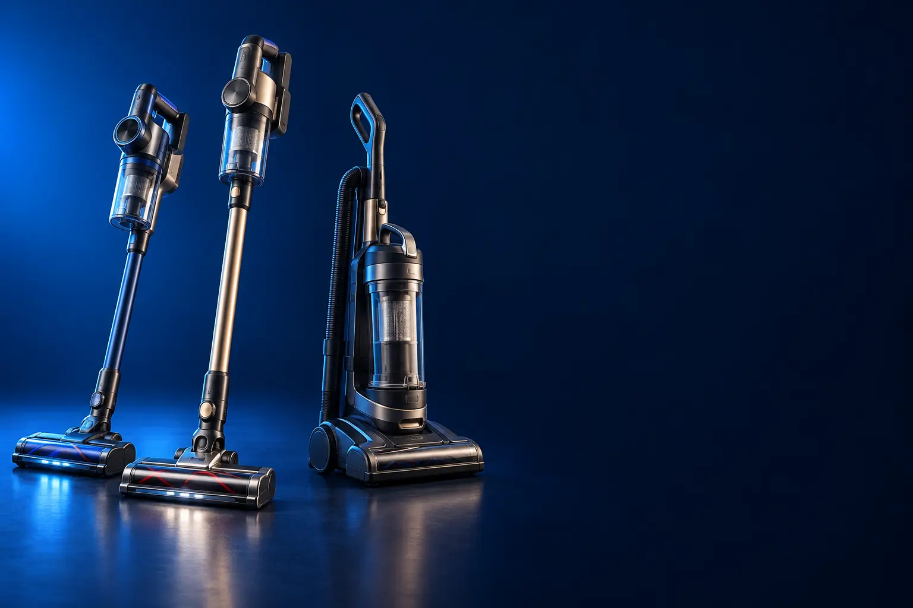

COM FIO
Melhor aspirador de pó vertical com fio custo-benefício
Potência que não acaba e preço baixo. O cabo de 5 m resolve a maior parte das casas e apartamentos.

Melhor custo-benefício com fioElectrolux STK15
CURADORIA TECHAPROVADO · 2026
Fio, bateria ou água: cada casa pede um aspirador vertical diferente. Separamos 18 modelos em 3 perfis, do custo-benefício ao top de linha, e dizemos para quem cada um vale a pena.

NOSSA LEITURA
Um aspirador pesado ou que dá trabalho fica no armário. Escolha pelo que você mais limpa: piso, tapete, pelo de pet ou mancha. Potência na caixa vem depois.
COMECE POR AQUI
COM FIO
Potência que não acaba e preço baixo. O cabo de 5 m resolve a maior parte das casas e apartamentos.
SEM FIO (BATERIA)
Pega e aspira, sem procurar tomada. A bateria e a escova antienrosco decidem a compra.

ASPIRA E PASSA PANO
Aspira e lava o piso numa passada só. Os melhores ainda se limpam sozinhos na base.

A FICHA, TRADUZIDA
01 - FIO OU BATERIA
O aspirador com fio tem força constante e nunca descarrega, e custa bem menos. O sem fio funciona com bateria: você pega e limpa na hora, sem procurar tomada nem arrastar cabo pela casa.
Para quem faz uma faxina grande por semana, o com fio resolve melhor. Para quem prefere limpar um pouco todo dia (a migalha da mesa, o pelo do sofá), o sem fio muda a rotina. Bateria entre 35 e 45 minutos dá conta de um apartamento.
A bateria perde capacidade com os anos. Modelos com bateria removível, ou de marca com assistência no Brasil, duram mais.
02 - POTÊNCIA E SUCÇÃO
Nos aspiradores com fio, a potência aparece em watts (W): quanto de energia o motor usa. Nos sem fio, as marcas falam em AW (air watts) ou kPa, que medem a força de sucção de verdade. Os números não são comparáveis entre si.
Para piso frio, 1.000 a 1.400 W com fio já sobram. Tapete grosso e pelo de pet pedem mais força e, principalmente, escova rotativa. Nos sem fio, acima de 100 AW o resultado já é bom.
Mais potência também significa mais barulho e, no sem fio, menos tempo de bateria no modo máximo.
03 - FILTRO HEPA
Todo aspirador puxa ar com poeira e devolve o ar "limpo" pela saída. O filtro HEPA segura partículas muito pequenas, como ácaros, fungos e pólen, que um filtro comum deixaria passar.
Para quem tem rinite, asma ou alergia em casa, o HEPA faz diferença real. A maioria da seleção tem filtro HEPA lavável, que se lava com água e seca antes de voltar.
Filtro sujo derruba a sucção. Lave conforme o manual (em geral a cada mês) e troque quando estiver gasto.
04 - ESCOVA E PELOS
A escova rotativa na base levanta a sujeira do tapete. O problema é que cabelo e pelo se enrolam nela e reduzem a limpeza.
Por isso, para quem tem pet ou cabelo comprido em casa, vale procurar escova com sistema de limpeza (como o Brush Roll Clean da Electrolux) ou lâmina que corta o cabelo (TangleCut, da Dreame).
Bocal próprio para pet e escova turbo ajudam a tirar pelo de sofá e cama do animal, onde o bocal comum desliza.
05 - ASPIRA E PASSA PANO
Alguns aspiradores têm um mop, um pano úmido preso na base: tira poeira fina, mas não remove mancha seca. Os lava e seca têm dois tanques e um rolo que gira, lava e é limpo pela máquina.
Os lava e seca são feitos para pisos duros (porcelanato, laminado, vinílico). Não servem para tapete. Os melhores lavam e secam o rolo na base, para não ficar cheiro.
Para sofá e tapete, o caminho é outro: a extratora, que borrifa e puxa a água com a sujeira.
A CURADORIA EM DETALHE
18 modelos da pesquisa
PERFIL · 6 MODELOS, DA ENTRADA AO TOP DE LINHA
O vertical com fio é o melhor custo-benefício da categoria: não tem bateria para acabar no meio da sala e custa uma fração do sem fio. A maioria vira aspirador de mão para sofá e carro. A escada vai do mais leve ao mais potente, com reservatório maior.

POR DENTRO DA ESCOLHA
O vertical mais barato com marca forte: vira aspirador de mão para sofá, cortina e carro, tem filtro HEPA lavável (99,9% de ácaros e alérgenos, segundo a Kärcher) e cabo de 5 metros.
Entrega o essencial para o dia a dia: leve, compacto e com filtro bom para quem tem alergia.
| Formato | Vertical e de mão (2 em 1) |
|---|---|
| Potência | 1.000 W |
| Filtro | HEPA lavável |
| Cabo | 5 m |
| Voltagem | 220 V |
Fonte: ficha e descrição do anúncio, conferidas em 02/11/2026. Dados informados pelo fabricante.
COM FIO · CUSTO-BENEFÍCIO 2 de 6
Melhor custo-benefício com fio
1.450 W · HEPA Allergy Protect · bocal UltraClean
Ver preço na AmazonPOR DENTRO DA ESCOLHA
1.450 W, reservatório de 1,6 L, filtro HEPA Allergy Protect e bocal UltraClean para janelas e frestas entre móveis.
O salto de potência em relação ao Kärcher é perceptível em tapete.
| Formato | Vertical e de mão (2 em 1) |
|---|---|
| Potência | 1.450 W |
| Reservatório | 1,6 L |
| Filtro | HEPA Allergy Protect |
| Voltagem | 127 V |
Fonte: ficha e descrição do anúncio, conferidas em 02/11/2026. Dados informados pelo fabricante.

COM FIO · INTERMEDIÁRIO 3 de 6
1.350 W · ciclone · HEPA · cabo de 5 m
Ver preço na AmazonPOR DENTRO DA ESCOLHA
Tecnologia ciclone, que compacta a sujeira e mantém o filtro limpo por mais tempo, filtro HEPA removível e lavável (99,5% das micropartículas) e cabo de 5 metros.
O ciclone faz a sucção cair menos conforme o reservatório enche, o que se nota em casas maiores.
| Formato | 3 em 1 (vertical, mão e bocais) |
|---|---|
| Potência | 1.350 W |
| Tecnologia | Ciclone |
| Filtro | HEPA lavável |
| Cabo | 5 m |
| Voltagem | 127 V |
Fonte: ficha e descrição do anúncio, conferidas em 02/11/2026. Dados informados pelo fabricante.

COM FIO · ALTERNATIVA 4 de 6
Outro caminho: mais potência
2.000 W · reservatório de 2 L · HEPA
Ver preço na AmazonPOR DENTRO DA ESCOLHA
A opção de força bruta: 2.000 W com sistema ciclone, filtro HEPA (99,5%), reservatório de 2 litros e cabo de 5 metros.
Não é um degrau acima da WAP, é a troca de leveza por potência e reservatório maior. Vale para quem tem tapete e casa maior.
| Potência | 2.000 W |
|---|---|
| Tecnologia | Ciclone |
| Reservatório | 2 L |
| Filtro | HEPA |
| Cabo | 5 m |
| Voltagem | 127 V |
Fonte: ficha e descrição do anúncio, conferidas em 02/11/2026. Dados informados pelo fabricante.

COM FIO · AVANÇADO 5 de 6
2 em 1 ciclônico · tubo extensor · bocais para cantos
Ver preço na AmazonPOR DENTRO DA ESCOLHA
Vertical e portátil com tubo extensor de longo alcance e bocais para cantos e escovas, para chegar embaixo de móveis e em frestas.
O que se paga aqui é o alcance e os acessórios, não a potência. Se você não precisa de tubo extensor, a Electrolux entrega mais por menos.
| Formato | Vertical e de mão (2 em 1) |
|---|---|
| Tecnologia | Ciclônica |
| Acessórios | Tubo extensor, bocal de cantos, escovas |
| Filtro | Lavável |
Fonte: ficha e descrição do anúncio, conferidas em 02/11/2026. Dados informados pelo fabricante.

COM FIO · TOP DE LINHA 6 de 6
Top de linha com fio
2.000 W · 3 litros · mangueira extensível
Ver preço na AmazonPOR DENTRO DA ESCOLHA
O vertical com fio mais completo: 2.000 W, reservatório de 3 litros com indicador de nível, filtro HEPA, tecnologia ciclone e mangueira extensível para escadas e cantos altos.
Com 3 litros, é o reservatório mais generoso da seleção. A mangueira extensível transforma o vertical num aspirador de casa inteira.
| Potência | 2.000 W |
|---|---|
| Sucção | 133 mbar |
| Reservatório | 3 L, com indicador |
| Filtro | HEPA |
| Extra | Mangueira extensível |
| Voltagem | 127 V |
Fonte: ficha e descrição do anúncio, conferidas em 02/11/2026. Dados informados pelo fabricante.
PERFIL · 6 MODELOS, DA ENTRADA AO TOP DE LINHA
O sem fio troca o cabo pela bateria: você pega na parede e aspira a sujeira na hora. O que pesa aqui é quanto a bateria dura, se a escova solta o cabelo enrolado e, para quem tem pet, se vem bocal próprio para pelos.

SEM FIO · ENTRADA 1 de 6
Bateria de até 40 min · LED · escova rotativa
Ver preço na AmazonPOR DENTRO DA ESCOLHA
A porta de entrada no sem fio: até 40 minutos de bateria, duas velocidades, luz LED na frente, escova rotativa para pelos e articulação de 180° para chegar nos cantos.
É o sem fio mais barato que passa nos nossos filtros. Funciona bem para manutenção diária, mas não espere a força de um com fio.
| Bateria | Até 40 min |
|---|---|
| Velocidades | 2 |
| Reservatório | 700 ml |
| Extras | LED frontal, escova rotativa |
| Voltagem | Bivolt (carregador) |
Fonte: ficha e descrição do anúncio, conferidas em 02/11/2026. Dados informados pelo fabricante.
SEM FIO · CUSTO-BENEFÍCIO 2 de 6
Melhor custo-benefício sem fio
2 em 1 · bateria de 38 min · limpa a escova num botão
Ver preço na AmazonPOR DENTRO DA ESCOLHA
O sem fio mais equilibrado: bateria de lítio que carrega 2 vezes mais rápido, luz LED e o sistema Brush Roll Clean, que tira os cabelos enrolados da escova com um botão. Vira aspirador de mão.
O Brush Roll Clean é o recurso que mais faz falta nos baratos: em casa com cabelo comprido, evita a tesoura.
| Bateria | Até 38 min, lítio 18 V |
|---|---|
| Formato | Vertical e de mão (2 em 1) |
| Escova | Brush Roll Clean (limpa no botão) |
| Extras | LED frontal, base de recarga |
Fonte: ficha e descrição do anúncio, conferidas em 02/11/2026. Dados informados pelo fabricante.

SEM FIO · INTERMEDIÁRIO 3 de 6
Bocal Pet Care · HEPA · 45 min
Ver preço na AmazonPOR DENTRO DA ESCOLHA
A versão para quem tem animal: bateria de até 45 minutos, filtro HEPA, Brush Roll Clean e o bocal exclusivo Pet Care para tirar pelo do sofá e da cama do pet.
O degrau sobre o de 38 min é a bateria maior, o filtro HEPA e o bocal para pelos.
| Bateria | Até 45 min |
|---|---|
| Filtro | HEPA |
| Bocal | Pet Care |
| Escova | Brush Roll Clean |
Fonte: ficha e descrição do anúncio, conferidas em 02/11/2026. Dados informados pelo fabricante.

SEM FIO · AVANÇADO 4 de 6
Tubo flexível · sucção automática · 7 acessórios
Ver preço na AmazonPOR DENTRO DA ESCOLHA
O tubo dobra para alcançar embaixo de sofá e cama sem você se abaixar. Tem 3 níveis de sucção com ajuste automático e 7 acessórios, incluindo escova turbo para pelos de animais.
O tubo flexível é o diferencial que nenhum outro da escada tem. O ajuste automático de sucção economiza bateria no piso liso.
| Tubo | Flexível |
|---|---|
| Sucção | 3 níveis + automático |
| Acessórios | 7, incluindo escova turbo animal |
| Bateria | Removível |
| Voltagem | Bivolt (carregador) |
Fonte: ficha e descrição do anúncio, conferidas em 02/11/2026. Dados informados pelo fabricante.

SEM FIO · AVANÇADO 5 de 6
150 AW · tela com informações · ajuste ao piso
Ver preço na AmazonPOR DENTRO DA ESCOLHA
Sucção de 150 AW, tela que mostra bateria e modo em tempo real e adaptação automática ao tipo de piso. A marca dá 2 anos de garantia contra defeitos.
É o sem fio com tela e sucção alta mais barato da seleção.
| Sucção | 150 AW |
|---|---|
| Tela | Informações em tempo real |
| Ajuste | Automático ao tipo de piso |
| Garantia | 2 anos |
Fonte: ficha e descrição do anúncio, conferidas em 02/11/2026. Dados informados pelo fabricante.

SEM FIO · TOP DE LINHA 6 de 6
Top de linha sem fio
310 AW · até 90 min · HEPA H14 · escovas com luz
Ver preço na AmazonPOR DENTRO DA ESCOLHA
O sem fio mais potente da seleção: 310 AW de sucção, motor de 150 mil rotações, até 90 minutos de autonomia e filtro HEPA H14 (99,99% de partículas de 0,1 μm). As escovas têm luz que revela a poeira, e vem escova para tirar pelo direto do animal.
Bateria de até 90 minutos e sucção de topo colocam o Z30 num nível em que ele substitui qualquer aspirador com fio.
| Sucção | 310 AW |
|---|---|
| Bateria | Até 90 min |
| Filtro | HEPA H14 |
| Escovas | Com luz (Dust Reveal) |
| Pet | Escova para pelos |
Fonte: ficha e descrição do anúncio, conferidas em 02/11/2026. Dados informados pelo fabricante.
PERFIL · 6 MODELOS, DA ENTRADA AO TOP DE LINHA
Os aspiradores de piso úmido aspiram e lavam o chão ao mesmo tempo, com um tanque de água limpa e outro de água suja. São feitos para piso frio e laminado. Subindo a escada, a base passa a lavar e secar o rolo sozinha.

LAVA E SECA · ALTERNATIVA 1 de 6
Outro caminho: lava estofados
Borrifa, esfrega e extrai · sofá, tapete e colchão
Ver preço na AmazonPOR DENTRO DA ESCOLHA
Não é um vertical: é uma extratora portátil, que borrifa água, esfrega e puxa a sujeira de volta. Feita para sofá, tapete, colchão e banco de carro, onde os verticais não lavam.
Entra na escada porque resolve o que nenhum aspirador de piso úmido faz: lavar tecido. Tem autolimpeza.
| Tipo | Extratora portátil |
|---|---|
| Funções | Borrifa, esfrega e extrai |
| Uso | Sofá, tapete, colchão, carro |
| Potência | 1.450 W |
| Voltagem | 127 V |
Fonte: ficha e descrição do anúncio, conferidas em 02/11/2026. Dados informados pelo fabricante.

LAVA E SECA · ENTRADA 2 de 6
Aspira e passa mop · até 60 min · 2 anos de garantia
Ver preço na AmazonPOR DENTRO DA ESCOLHA
Aspirador vertical sem fio com mop: aspira e passa um pano úmido ao mesmo tempo. Tem até 60 minutos de bateria, bocal com LED que revela a poeira e tecnologia PowerCyclone 8.
É o jeito mais barato de juntar aspirar e passar pano, com marca e garantia de 2 anos.
| Funções | Aspira e passa mop |
|---|---|
| Bateria | Até 60 min |
| Tecnologia | PowerCyclone 8 |
| Bocal | Com LED |
| Garantia | 2 anos |
Fonte: ficha e descrição do anúncio, conferidas em 02/11/2026. Dados informados pelo fabricante.
LAVA E SECA · CUSTO-BENEFÍCIO 3 de 6
Melhor custo-benefício que passa pano
Aspira e lava · autolimpeza e secagem · sólidos e líquidos
Ver preço na AmazonPOR DENTRO DA ESCOLHA
O primeiro lava e seca de verdade da escada: aspira e passa pano ao mesmo tempo, recolhe sujeira seca e líquidos, e na base faz autolimpeza e secagem do rolo.
Entrega o pacote completo pelo menor preço: dois tanques, autolimpeza e secagem.
| Funções | Aspira e lava (sólidos e líquidos) |
|---|---|
| Base | Autolimpeza e secagem |
| Uso | Pisos duros |
| Pet | Indicado para pelos |
Fonte: ficha e descrição do anúncio, conferidas em 02/11/2026. Dados informados pelo fabricante.

LAVA E SECA · INTERMEDIÁRIO 4 de 6
Detecção de sujeira · secagem a ar quente · 35 min
Ver preço na AmazonPOR DENTRO DA ESCOLHA
O sensor de sujeira ajusta a força e a água conforme o chão está mais ou menos sujo. A escova dupla limpa de borda a borda e, na base, o rolo é seco com ar quente. A bateria dura 35 minutos.
O degrau sobre a Liectroux é a detecção de sujeira e a secagem a ar quente, que evita o cheiro de pano úmido.
| Bateria | 35 min (6 x 4.000 mAh) |
|---|---|
| Sensor | Detecção de sujeira |
| Limpeza | Borda a borda |
| Base | Secagem a ar quente |
Fonte: ficha e descrição do anúncio, conferidas em 02/11/2026. Dados informados pelo fabricante.

LAVA E SECA · AVANÇADO 5 de 6
21 kPa · deita 180° · TangleCut · leve
Ver preço na AmazonPOR DENTRO DA ESCOLHA
Leve como duas garrafas, segundo a Dreame, com 21 kPa de sucção, corpo que deita 180° para entrar embaixo dos móveis, limpeza de bordas dos dois lados e lâmina TangleCut que corta o cabelo enrolado.
É o mais leve e potente da escada, e o deitar a 180° muda o uso em casa com móveis baixos.
| Sucção | 21 kPa |
|---|---|
| Ângulo | Deita 180° |
| Escova | TangleCut antienrosco |
| Bordas | Limpeza dos dois lados |
Fonte: ficha e descrição do anúncio, conferidas em 02/11/2026. Dados informados pelo fabricante.

LAVA E SECA · TOP DE LINHA 6 de 6
Top de linha que passa pano
Lavagem a 90 °C · deita 180° · secagem em 5 min
Ver preço na AmazonPOR DENTRO DA ESCOLHA
O mais completo do perfil: deita 180°, a escova se renova com água limpa a cada passada e, na base, é lavada a 90 °C e seca com ar em cerca de 5 minutos. Sucção de 18 kPa e lâmina TangleCut.
A lavagem a 90 °C é o que separa o topo dos demais: higiene do rolo sem você encostar.
| Sucção | 18 kPa |
|---|---|
| Ângulo | Deita 180° |
| Base | Lavagem a 90 °C e secagem rápida |
| Escova | Autolimpante com água limpa, TangleCut |
Fonte: ficha e descrição do anúncio, conferidas em 02/11/2026. Dados informados pelo fabricante.
Nenhum modelo encontrado. Tente outro termo ou volte para Todos.
LADO A LADO
| Modelo | Perfil | Posição | Bateria | Destaque |
|---|---|---|---|---|
| Kärcher VCL Stick | Com fio | Entrada | 1.000 W | 2 em 1 · filtro HEPA · cabo de 5 m |
| Electrolux STK15 | Com fio | Custo-benefício | 1.450 W | 1.450 W · HEPA Allergy Protect · bocal UltraClean |
| WAP Silent Speed Max 3 em 1 | Com fio | Intermediário | 1.350 W | 1.350 W · ciclone · HEPA · cabo de 5 m |
| Philco Power Clean 2000 W | Com fio | Alternativa | 2.000 W | 2.000 W · reservatório de 2 L · HEPA |
| BLACK+DECKER AVT12 | Com fio | Avançado | 2 em 1 ciclônico · tubo extensor · bocais para cantos | |
| WAP Power Speed 2 em 1 | Com fio | Top de linha | 2.000 W | 2.000 W · 3 litros · mangueira extensível |
| WAP Eco Rápido | Sem fio | Entrada | Até 40 min | Bateria de até 40 min · LED · escova rotativa |
| Electrolux Ergorapido 38 min | Sem fio | Custo-benefício | Até 38 min, lítio 18 V | 2 em 1 · bateria de 38 min · limpa a escova num botão |
| Electrolux Ergorapido 45 min Pet | Sem fio | Intermediário | Até 45 min | Bocal Pet Care · HEPA · 45 min |
| Arno X-Force Flex 9.60 | Sem fio | Avançado | Removível | Tubo flexível · sucção automática · 7 acessórios |
| Xiaomi Mi Vacuum Cleaner G10 | Sem fio | Avançado | 150 AW · tela com informações · ajuste ao piso | |
| Dreame Z30 | Sem fio | Top de linha | Até 90 min | 310 AW · até 90 min · HEPA H14 · escovas com luz |
| WAP Spot Cleaner W3 (extratora) | Lava e seca | Alternativa | 1.450 W | Borrifa, esfrega e extrai · sofá, tapete e colchão |
| Philips Walita Aqua Série 3000 | Lava e seca | Entrada | Até 60 min | Aspira e passa mop · até 60 min · 2 anos de garantia |
| Liectroux i7 Pro | Lava e seca | Custo-benefício | Aspira e lava (sólidos e líquidos) | Aspira e lava · autolimpeza e secagem · sólidos e líquidos |
| Dreame H12 Pro Plus | Lava e seca | Intermediário | 35 min (6 x 4.000 mAh) | Detecção de sujeira · secagem a ar quente · 35 min |
| Dreame H60 GT | Lava e seca | Avançado | 21 kPa · deita 180° · TangleCut · leve | |
| Dreame H12 Pro FlexReach | Lava e seca | Top de linha | Lavagem a 90 °C · deita 180° · secagem em 5 min |
CONSIDERAÇÕES FINAIS
Bateria que dá conta do apartamento e escova que solta o cabelo num botão.
Os tops de linha (WAP Power Speed, Dreame Z30 e Dreame H12 Pro FlexReach) fazem sentido para casa grande, com pet e muito piso para lavar. Para apartamento, os custo-benefício resolvem.
Com fio, o Electrolux STK15. Sem fio, o Electrolux Ergorapido de 38 minutos. Para aspirar e lavar o piso, o Liectroux i7 Pro.
Com fio é mais barato e tem força constante. Sem fio é mais prático para limpezas rápidas do dia a dia, mas depende da bateria.
Os que têm escova rotativa com sistema antienrosco e bocal para pelos, como o Electrolux Ergorapido Pet e o Dreame Z30.
Os lava e seca, com rolo e dois tanques, lavam o piso duro de verdade. Os que têm só um mop (pano preso) tiram poeira fina, mas não mancha seca.
Porque ele muda várias vezes por dia. Usamos o preço só para montar a escada de cada perfil; o botão leva ao valor atualizado na loja.
TRANSPARÊNCIA EDITORIAL
Separamos os perfis pelo que as pessoas mais procuram: com fio, sem fio e que passa pano. Cada modelo precisa responder com clareza "para quem ele é o certo".
Em cada perfil há modelos em faixas de preço diferentes, e cada degrau precisa entregar algo que o anterior não entrega. Dois modelos com a mesma proposta não entram juntos.
Ficha e especificações foram conferidas nos anúncios das lojas em 02/11/2026.
Os links de compra desta página são de afiliado: se você comprar por eles, o TechAprovado pode ganhar uma comissão, sem custo adicional para você. Isso não muda a ordem nem a escolha dos produtos.
📲 GUIAS E DICAS NO SEU FEED
Dicas práticas antes de comprar, em carrosséis e vídeos curtos, sempre com link para o guia completo.